During its lifetime, an application goes through periodic changes. These changes are needed to better fit the application to the changing requirements of the airlines.
Despite this, there are parts of any application that seldom, if ever, change. Examples of this category of entries are the airline initials, or the name of the Teledyne airborne system for which the application is being developed. It is the goal of the configuration function of the ACMS to collect these relatively persistent data in a single phase of activities and “configure” the system accordingly.
We should note that, despite being discussed late in this manual, configuration activities are usually the first step of any ACMS development work. We discuss it at this point because, with the exception of version update, they are a less frequent development activity. The version information is an exception as it is updated every time a new version of the application is built.
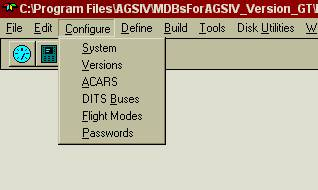
The configuration operations can be accessed through the Configure pull
down menu selection of the main menu bar (see Figure 10.1).
Figure 10.1: Main Menu with Configure option selected.
The System menu selection displays a window with the following tabs:
Figure 10.2a: FDIMU System Configuration Window (General Tab Shown).
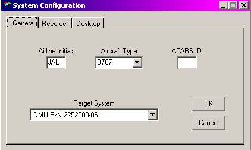
Figure 10.2b: iDMU System Configuration Window (General Tab Shown).
Within this tab the following values must be entered (see Figure 10.2):
· Airline Initials - The string entered here should be the airline’s 3-letter code. This information is stored in the reserved parameter called 0VERAL and can be used anywhere a parameter is used (e.g. in reports, screens, triggers, etc.). This code is also used as a default for naming files on the upload disk, when an upload disk is generated.
·
Aircraft Type – For iDMU only. The aircraft type for which this application
is to be used.
· ACARS ID - The ACARS ID for which this application is being specified must be entered here. This information is stored in the reserved parameter called 0ALID and can be used anywhere a parameter is used.
· Target System - The part number of the airborne system that will host the application must be selected from the list provided. This selection affects the types of parameters and capabilities available to the application.
This setting is only required for ACMS Applications. Older maintenance recorders (QARs and DARs) require a Block Size specification, where the larger the block size (1536, 2304, 3072, or 4608), the more efficient the recording is (there are a smaller number of inter-block gaps). However, if there is a problem with retrieving data from a block, the disadvantage of a large block is that a large number of recorded words may be lost. The “Auto” selection for the block size allows the recorder to select the block size (see Figure 10.3). The recorder manufacturer usually recommends the appropriate block size options.
As the ACMS recorders can be external (QAR, DAR, OQAR etc.) or internal (optical, PCMCIA etc.), the destination of the recorded Raw Data can be selected to be one, the other, or both. As the raw data is sent to the recorder with no handshake,
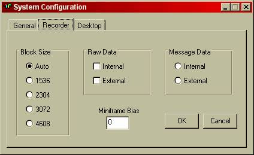
Figure 10.3: System Configuration Window (Recorder Tab Shown).
it is possible to direct the output to both the internal and external recorders. This may be done for cross check, for redundancy, or for obtaining identical data on two media for two different groups in an organization (see Figure 10.3). On the other hand, because of the required handshake protocol for Message Data (reports), messages (reports) can go either to the internal or external recorder. Thus only one of the two destinations can be selected (see radio buttons of Figure 10.3).
“Miniframe” also known as “Miniframe 4” or “Miniframe 7” is an airborne capability that allows the user to specify, on the aircraft, additional words to be acquired and recorded by the recorder. As there are different conventions for specifying the new word location in the frame, Miniframe bias is used to select the desired convention.
When Miniframe bias is set to zero, the miniframe words are referenced by numbers one to sixty four. If it is desired to refer to these words with their actual position in the subframe, then this value should be set to the word number of the first miniframe.
AGS IV allows each application to have a distinct, developer selectable, background picture (wallpaper) in the main application window. It is advisable to select this screen to be a bitmap picture of the aircraft for which the application is being generated. In cases where more than one application resides on the same PC, this background picture will act as a reminder and reduce the chances of the data for one aircraft type to be entered for another aircraft type.
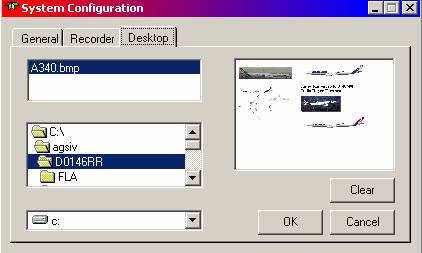
Figure 10.4: System Configuration Window (Desktop Tab Shown).
To select a background for the application, the desired bitmap can be specified in the Desktop tab, by selecting the drive, the folder, and the actual bitmap file to be displayed (see Figure 10.4).
It is advisable to store the wallpaper bitmap of each application in the application database folder, so that it may be backed up along with the application database.
Maintaining version information is very important for the control of the application configurations. For this purpose AGS IV provides three parameters that can be assigned values by the developer. These parameters, as with any other parameter, are then used in recording data, designing screens, and generation of messages and reports.
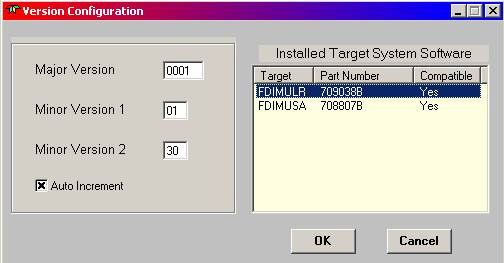
Figure 10.5: Version Configuration Window.
The three reserved parameters are 0VERDB00 (Major Version), 0VERDB01 (Minor Version 1), and 0VERDB02 (Minor Version 2). Their value can be set from the Versions selection of the Configuration menu. 0VERDB00 holds a 4-character alpha numeric string. 0VERDB01 and 0VERDB02 each may hold a two character alphanumeric string.
It is important to increment a portion of the version number after every successful build of the application. This will force any later changes to go under the new version number. The version numbers are for the developer to use as necessary. The system, however, will automatically increment 0VERDB02 after every build, if the Auto Increment selection is checked and the value entered for 0VERDB02 is a two-digit number (see Figure 10.5).
Here the Uplinks, Downlinks and Broadcast tabs define the ACMS to ACARS interface (see Figure 10.6). The Uplink and Downlink tabs are available for future expansion of AGS IV.
Arinc 429 labels can be assigned in AGS IV to be broadcast through ACARS. The ACARS Broadcast tab is shown in figure 10.6. Within this tab is a list of the labels to be broadcast, along with SDI, Source, and Frequency.
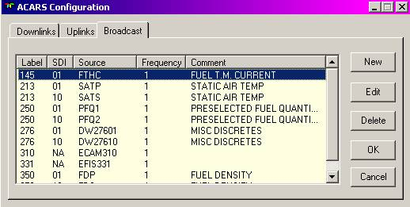
Figure 10.6: ACARS Broadcast
Tab.
Next to this list are a set of buttons that enable the user to:
define broadcast label,
an existing label for modification (see figure 10.7),
an existing label. The user will be asked to confirm the deletion,
This will close the list,
and close this list.
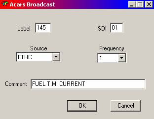
Figure 10.7: ACARS Broadcast Edit Window.
Uplinks are commands and requests sent from the ground, through ACARS, to ACMS for different actions by the system. This window selection displays a list of possible uplink commands (see Figure 10.8). Security tokens can be assigned to some or all of the commands. Once a security token is associated to a command, it becomes necessary to include a password (which has the token privilege) with the uplink command. The relationship between tokens and passwords is described in the section on password security, later in this chapter.
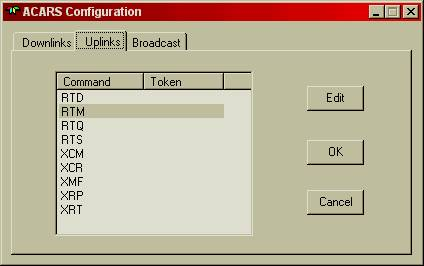
Figure 10.8: ACARS Configuration Window (Uplink Tab Shown).
Downlinks are the reports sent to the ground through the ACARS. These reports or messages are broken into blocks (of about 200 characters) before being sent to the ACARS unit. On the ground the blocks are put together to reconstruct the message. The ‘Header on first block only’ check box will set the reserved parameter 0ACARSHO to ‘1’ if checked and to ‘0’ if unchecked. Checking this box will cause the ACARS header to be suppressed from message blocks greater than 1.
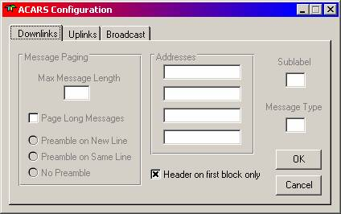
Figure 10.9: ACARS Configuration Window (Downlinks Tab Shown).
The DITS busses connected to the airborne system are the source of the ARINC 429 parameters received by the unit. In defining parameters, reference is made to this bus. In this window the characteristics of the bus are defined (see Figure 10.10). The bus name is user selectable, all other information must be obtained from the specification of the airborne unit. In addition to the standard busses connected on the aircraft, additional busses can be connected to the spare ports of the airborne unit. For these spare busses, the port, card and channel are still obtainable from the unit specification. The speed, however, must be defined by the user to match the speed of the device feeding data to the bus.
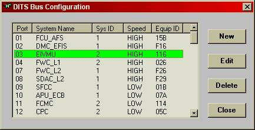
Figure 10.10a: FDIMU DITS Bus Configuration Selection Window.
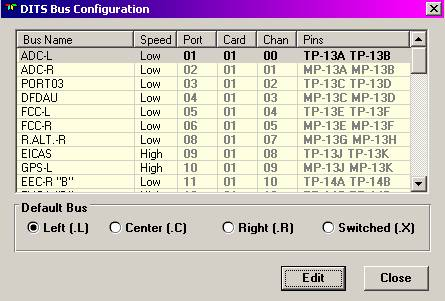
Figure 10.10b: iDMU DITS Bus Configuration Selection Window.
For iDMU, at the lower portion of the DITS Bus Configuration screen, there is the capability of selecting a default bus type. This is a facility to allow less key strokes when typing in parameter names at the AGS IV or the display unit on the aircraft
At the top of the trigger definition windows there are buttons for specifying the flight modes where the trigger must be active (see Figure 10.11). The text on the buttons represents the flight mode. As the selection of flight modes and the names associated with the modes are under the control of the application developer, this item in the configuration menu allows the developer to specify the flight modes that are defined in this application.
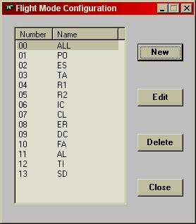
Figure 10.11: Flight Mode Configuration
Window.
For iDMU only. For burst busses, labels are acquired as packets. TCAS is an example. In this case, a Packet List must be defined (see figures 10.11a, b, c). A start word label and end word label may be specified, as well as labels in intermediate words. The 429 bus must be chosen as well as the maximum number of groups per packet and the maximum number of packets per second.
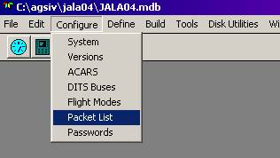
Figure
10.11a: Packet List Configuration Option
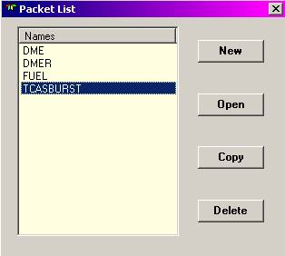
Figure
10.11b: Packet List Selection Window
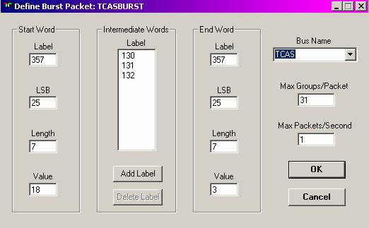
Figure
10.11c: Packet List Configuration
AGS IV allows the developer to implement a password protected security system for the functions of the airborne system. This includes the line-select key of any display screen and the uplink messages received from the ground. Any line select key on any screen of the airborne display unit can be protected (i.e. will not function unless a password provides the necessary authorization). This allows the developer the capability of limiting the access of the display functions to different groups of users or even different individuals.
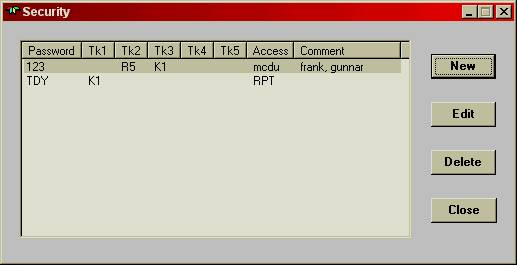
Figure 10.12: Password Configuration Window.
In defining the functions of the line select keys, if a key function of a particular screen is not to be used without the necessary authorization, then a two character “Token” can be assigned to this key in the corresponding screen design form. The selection of the two characters token is at the developer’s discretion. Other keys in this or other displays that require a similar protection can be assigned the same token, keys that require a different level of protection should be assigned a different token.
The Uplink tab in the ACARS configuration selection of the Configure menu allows a similar token assignment to individual ACARS uplink commands (see Figure 10.6). Commands that do not need protection will have no tokens assigned to them. Groups of uplink commands that need similar protection will be assigned the same two-character token, as defined by the developer.
Once tokens are created and assigned to the necessary screen line select keys (in the screen design form) and ACARS uplink commands (in the ACARS configuration form), then the password configuration screen can be used to define passwords and the tokens each password can access (see Figure 10.12).
To define the password, the Password option from the Configure menu must be selected and then the New button pushed. This will cause a form to be displayed (Figure 10.13) that allows the definition of a password with up to 8 characters. The password can be intended for one person such as the developer, or a group of people such as the mechanics or crew.
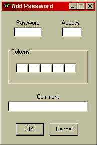
Figure 10.13: The Password definition window.
Each password can be assigned an authorization to access up to five tokens, i.e. the person who knows this password can select any line select key or transmit any uplink command that is protected by any of the tokens that it possesses.
In the case of protected uplink commands the password is included as part of the text with each uplink (see the section on uplinks in this chapter).
In the case of protected Line Select Keys the following sequence of events occurs. If on the aircraft display, a line select key is selected that is protected by a token, instead of performing the defined function, the system displays a password entry screen. The user must now enter a password that has this token among its (up to five) authorized tokens. This being the case, the password entry screen disappears and the function of the line select key is performed. Otherwise the user must enter another password or return and make another selection.
Once a password is entered in the password entry screen, the tokens that it possesses become known to the system. Thus, if another line select key is pressed that requires the same token, the password entry screen will not reappear.
The tokens possessed by a password are remembered until one of the following events happen:
· Another password is entered, in which case the tokens of the new password are remembered.
· The user logs off the display
· 20 minutes passes with no activity at the display keyboard.
Note that the tokens of a password uplinked to the system are NOT remembered.
The following two examples demonstrate the implementation of a hierarchical and a group oriented security system using the token and password capabilities of AGS IV.
Example 1 - A
Hierarchical Security System
Assume the line select keys of the screens of an application can be divided into three levels of criticality. Some keys can be selected by anyone (level 3), these keys are defined with no tokens assigned. Some keys can be selected by mechanics and supervisors (level 2). And, finally, some keys can only be selected by the supervisors (level 1). All level two keys can be protected by a token, say, P2 and all level one keys can be protected by a token, say P1.
Then the password given to the mechanics will be defined to possess the token P2 and the password given to the supervisors will be defined to possess P2 and P1. Thus if the mechanics password is entered, all level two and three keys will function, but if a level one key is selected, then the password screen will reappear. Now if the supervisor password is entered then all the keys in all screens will be selectable, until the display is logged off, or 20 minutes pass with no activity at the keyboard.
Example 2 - A Group Oriented Security System
Assume a group of uplink commands and line select keys is to be accessible to the mechanics, a second group of uplink commands and keys is to be accessible to the developers, and a third group is still to be password protected, but accessible to both mechanics and developers.
In this case the first group of keys and uplink commands can be assigned a token MM, the second group assigned a token DD and the third group assigned the token MD. Now the password given to the mechanics will be defined with the tokens MM and MD, the password for the developers will be defined with the tokens DD and MD.
The password definition screen in AGS IV allows the definition of an optional four-character text along with each password, called Access. The Access text is used only as a reminder of the password that is in effect when the password entry screen appears. This, of course, can only happen if a password has previously been entered, but the line select key selected has a token that is not possessed by the current password and it has become necessary to request a different password. In this case the Access text of the previous password is displayed in the password entry screen.
As an example, the password defined for the supervisors might have the Access text “SUPV”, where the password for the mechanics might have the Access text “MECH”. Now if a mechanic enters the mechanics password and later tries to select a key that has a token not possessed by this password, the password entry screen will reappear, and indicate that the current access is “MECH”, thus implying that the mechanics password is not authorized to access this new function. In this case another password is necessary.
Some configuration information, especially that which needs to be modifiable during application execution is specified by assigning values to reserved parameters (i.e. the parameters names that start with the zero character). Although it is possible for the developer to assign values to these parameters using the parameter definition screens of AGS IV; being reserved parameters, modifications to their definitions is discouraged. Therefore the values of these parameters need to be assigned by the first trigger that executes after power up of the airborne unit. Therefore, every application has a reserved trigger called _INISERV. This trigger is executed only once after power up, and this trigger is where the developer can assign configuration selections to reserved parameters.
The following are some reserved parameters that can be used to specify configuration information, and the possible values that can be assigned to them:
0ACATYPE := “724B” # interface to ARINC 724B ACARS (ACMS only)
0ACATYPE := “724” # interface to ARINC 724 ACARS (ACMS only)
0ADLDATR := “HA” # when downloading to the loader, use high speed
# and append to existing data on the diskette
0ADLDATR := “HO” # when downloading to the loader, use high speed
# and overwrite existing data on the diskette
0ADLDATR := “LA” # when downloading to the loader, use low speed
# and append to existing data on the diskette
0ADLDATR := “LO” # when downloading to the loader, use low speed
# and overwrite existing data on the diskette
0CPU1SIM := 0 # no CPU1 simulation, normal operation (ACMS only)
0CPU1SIM := 1 # CPU1 data to simulated, ignore data from the
# inter-cpu buffer (ACMS only)
0HCMINUS := “M” # if for a numeric value a CCCC... format is used
# instead of NNNN... then for negative values “M”
# will be used instead and “-“. Any character can
# be used instead of “M”
0HCPLUS := “P” # if for a numeric value a CCCC... format is used
# instead of NNNN... then for positive values “P”
# will be used in the leftmost position. Any character
# can be used instead of “P”
0MAXFCNT := 1000 # the flight count should reset to 1 when it reaches
# 1000. Any value can be used instead of 1000
0PROMPT1 := “<ACM” # the first four characters of the prompt on the
# MCDU menu
0PROMPT2 := “S” # the last four characters on the MCDU menu
0QARCCUR := 0 # no concurrent raw data and message data
# output to the recorder. Stop the raw data
# before outputting message data
0QARCCUR := 1 # concurrent raw data and message data output to
# the recorder is allowed. Do not stop the raw data
# while outputting message data
0PTRTYPE := 740 # output to ARINC 740 or 744 printer
0PTRTYPE := 597 # output to ARINC 597 printer